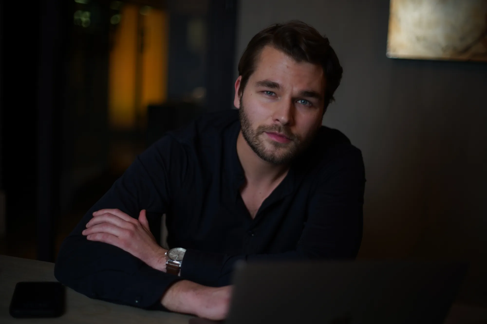
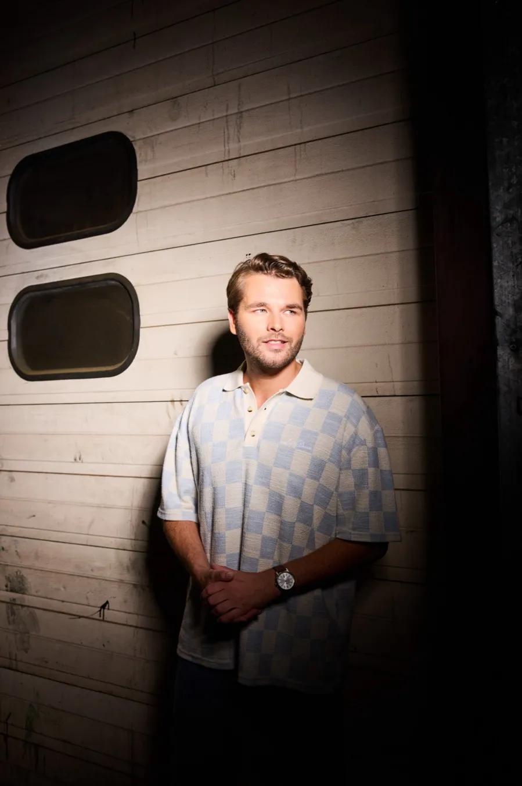

Keynote
45 minutenHet verhaal van één mens en twaalf AI-collega's, met een live demo waarin de zaal een bedrijf kiest. Voor congressen, kick-offs en teamdagen.
Ik ben Hielke Boersma: radio-dj, maker en ondernemer. Zonder IT-achtergrond bouwde ik een compleet bedrijf met AI-agents. Nu laat ik sales- en marketingteams zien hoe zij dat zelf doen.

Sam, Ada, Otto en nog negenMijn team, allemaal AI.
Ik ben vooral een creatief. Ik vertel verhalen, met woorden en met muziek. Code schrijven heb ik nooit geleerd. Wat ik wel kan: helder uitleggen wat goed werk is.
Van maandag tot en met donderdag sta ik van 12:00 tot 16:00 live op SLAM!. Daarnaast draai ik op feesten en presenteer ik events.
Van concept en opname op locatie tot montage en publicatie. Onder meer voor FC Utrecht, PharmaPartners en Gemeente Groningen.
Sinds 2026 maak ik met Storio Media video's voor bedrijven: concept, AI-beeld, stem en muziek. Binnen een week klaar.
Twee bedrijven, veel ideeën, en maar één mens. Acquisitie, offertes, mail, websites, video, geluid: er was altijd meer werk dan handen. Dus ben ik collega's gaan inwerken. Van een ander soort.


Groeien betekende vroeger mensen aannemen. Ik heb twaalf collega's ingewerkt. Ze werken elke dag, ook als ik op de radio zit. En geen van hen is een mens.
Onder de motorkap is het één brein, Claude, met per collega een eigen handboek. Elk handboek is gewoon tekst, in mijn woorden.
Sam, Ada en Otto werken via Telegram, dag en nacht. De rest werkt met mij mee op mijn laptop. Niets gaat de deur uit zonder mijn "ja": zij doen het werk, ik houd het oordeel.
Vijf woorden, en je snapt hoe het werkt. Een agent inwerken is niets anders dan een nieuwe collega inwerken: een functieomschrijving, voorbeelden, huisregels en feedback.
Voor sales- en marketingteams die willen zien wat AI echt voor hun werk doet. Geen theorie of hype, maar mijn eigen bedrijf als voorbeeld, een live demo en zelf aan de slag.
Het verhaal van één mens en twaalf AI-collega's, met een live demo waarin de zaal een bedrijf kiest. Voor congressen, kick-offs en teamdagen.
De keynote plus een workshop: iedereen werkt zijn eerste AI-collega in, met een werkblad en een startprompt. Je team gaat naar huis met iets wat werkt.
Samen met je team de eerste agents bouwen voor jullie eigen werk, zoals leads, follow-ups of content. Verspreid over een paar sessies.
 Blader zelf door de presentatie →
Blader zelf door de presentatie →
Vertel me over je team, de gelegenheid en wat je wilt bereiken. Ik denk graag mee over de vorm: een keynote, een sessie met workshop of een traject.
